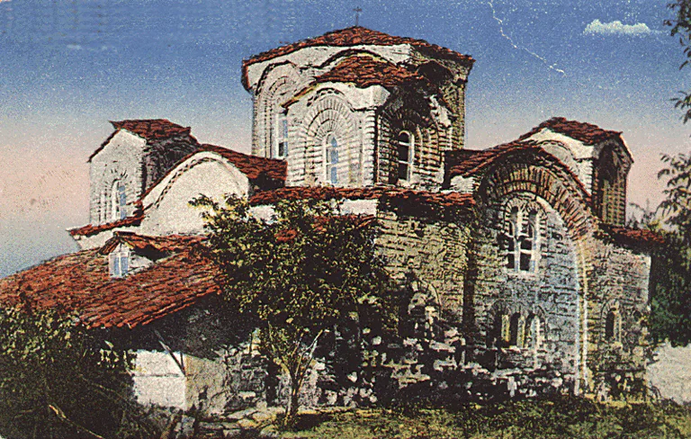
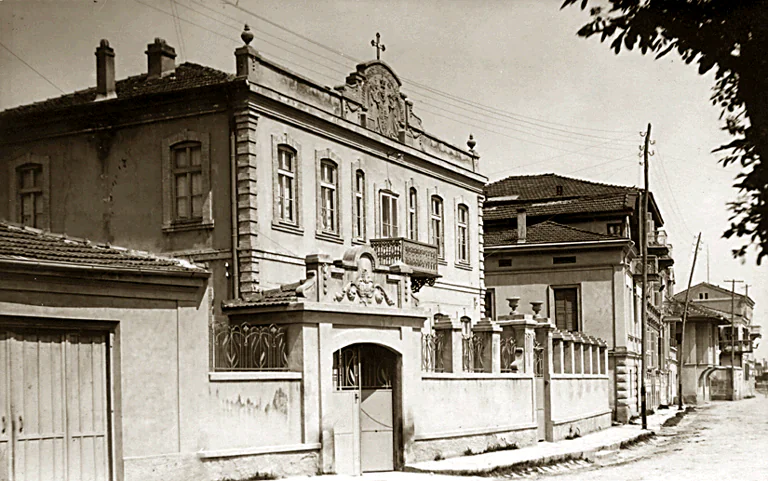

Свети Спас
- Продукција
- УФУЖ и Документарни филм Праг
- Сценарио и режија
- Славко Јаневски и EMAN CANERA
- Година
- 1959
- Трајање
- 00:31

Црква Св. Пантелејмона, изнад села Горње Нерези, југозападно од Скопља. Подигао ју је Алексије Комнин, из породице Комнина, 1164. године. До данас је сачуван натпис на мермерном надвратнику на улазу из припрате у наос цркве. Грађевина је једнобродна са осмостраном централном куполом, од камена и цигле, и четири мале четворостране куполе постављене на угловима цркве. Црква је најстарији византијски споменик, не само у Скопљу, већ и у Македонији. Живописана је одмах по изградњи. Касније, у 15, 16. и 19. веку, поново је живописана, али је први живопис чини најзначајнијим спомеником.


Св. Богородица, изграђена 1835. год. Налазила се на левој обали Вардара. Под утицајем је византијске архитектуре, са примењеним барокним савременим урбаним елементима у третману простора. Изгорела је током Другог светског рата. Све до тада била је саборна црква града. После тога саборна црква је Св. Димитрије. (1920-их)

Црква Св. Богородице - 1920-их.

Окупљање народа на празник Видовдан, у дворишту цркве Св. Богородице - 1919. година.

Црква Св. Димитрија изграђена је у 18. веку на месту средњовековне цркве Св. Димитрија. Поправљена је 1886-94. год., када су направљени ограда и звоник. До 1980. год. била је саборна црква. Налази се на левој обали Вардара у близини Каменог моста (1920-их).

Црква Св. Димитрија - 1930-их.

Скопска митрополија. Налазила се на кеју на левој обали Вардара - 1920-их.

Главна улица у свом обликовању (данас је то улица „Македонија“, која се протеже од данашњег Музеја града Скопља ка Каменом мосту). На десној страни види се Католичка црква (Дом Св. Марте) готског архитектонског израза, као и поједине зграде на левој страни. Изграђена је донацијом аустријске владе. Део улице код Каменог моста поплочан је 1911. године, да би прошао султан Мурат V, који је дошао да посети Скопље пре свог одласка на Косово поље.

Католичка црква у готском стилу, изграђена почетком 20. века - 1920-их.

Главна улица ка тргу. У првом плану је Католичка црква. (1950-их)

Главна улица у правцу железничке станице (данашњи Музеј града Скопља). Са леве стране види се Католичка црква. (1950-их)

Звоник цркве Св. Спаса - 1910-их.

Црква Св. Спаса налази се наспрам скопске тврђаве - Кале. Подигнута је крајем 17. века. То је мала црква, до половине укопана у земљу. Истиче се једном од најстаријих и најлепших олтарних прегради, рађеном у дрвету дубоком резбом, од браће Фрчковски из Галичника: Петра, као руководиоца, Марка и Макарија. Они су представљени на десној страни иконостаса. Иконостас је рађен у периоду 1814 - 1824. године. Фотографија је снимљена 1920-их.

Двориште цркве Св. Спаса. Фотографија је снимљена 1930-их.

Панорама Скопља. У првом плану доле је црква Св. Спаса - 1970-их.

Црква Св. Ђорђа - у махали „Чаир“ - 1930-их.

Црква „Св. Константин и Св. Јелена“. - 1930-их.

Храм славе и војничко гробље из Балканских ратова. Освећен 1928. године. (1930-их)

 Аквадукт4 разгледнице
Аквадукт4 разгледнице Кале30 разгледница
Кале30 разгледница Мостови60 разгледница
Мостови60 разгледница Кеј58 разгледница
Кеј58 разгледница Трг46 разгледница
Трг46 разгледница Објекти66 разгледница
Објекти66 разгледница Хришћански храмови19 разгледница
Хришћански храмови19 разгледница Муслимански објекти33 разгледнице
Муслимански објекти33 разгледнице Официрски дом29 разгледница
Официрски дом29 разгледница Позориште28 разгледница
Позориште28 разгледница Железничка станица13 разгледница
Железничка станица13 разгледница Школе36 разгледница
Школе36 разгледница Паркови12 разгледница
Паркови12 разгледница Пијаце18 разгледница
Пијаце18 разгледница Улице38 разгледница
Улице38 разгледница Панорама I60 разгледница
Панорама I60 разгледница Панорама II30 разгледница
Панорама II30 разгледница Колажи55 разгледница
Колажи55 разгледница Поплаве9 разгледница
Поплаве9 разгледница Земљотрес27 разгледница
Земљотрес27 разгледница Скопље 200026 разгледница
Скопље 200026 разгледница